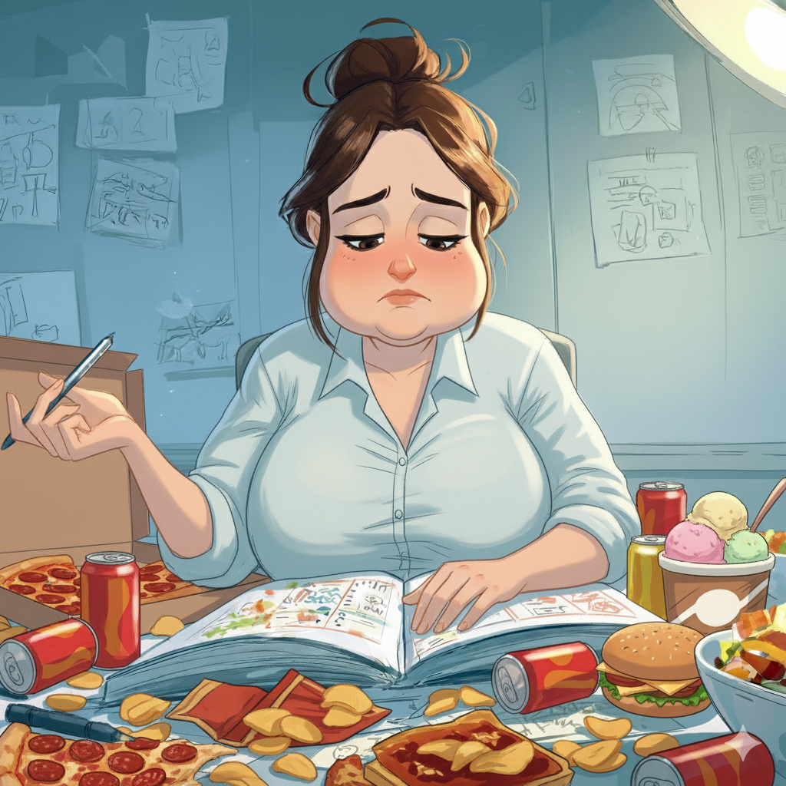
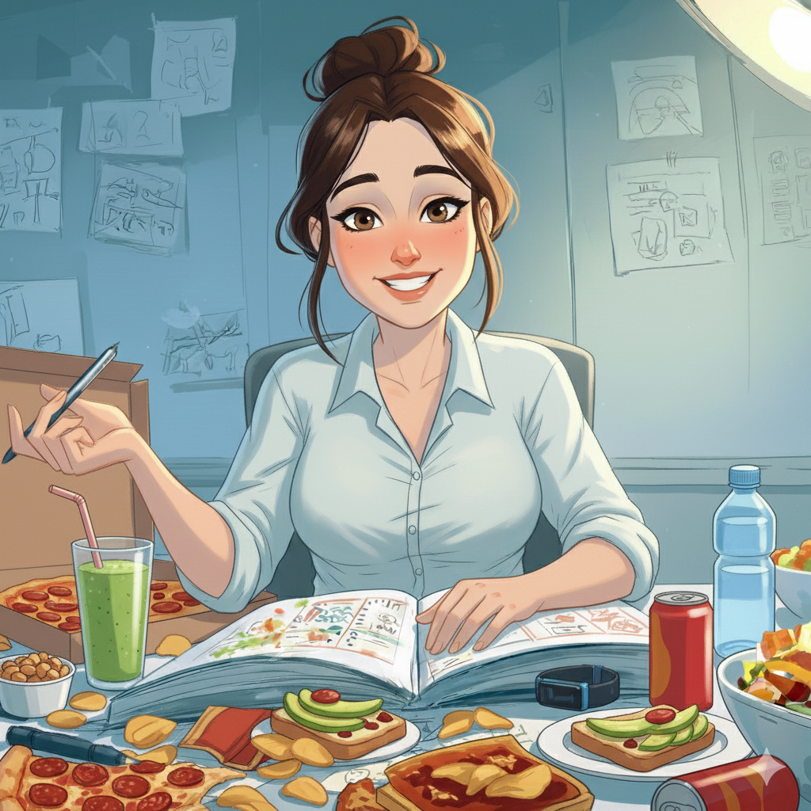

生成專屬報告中...
BeBetter 卡關檢測
2 分鐘找到你的減脂卡關點
減脂不是知識的問題，而是行為的瓶頸。
在這裡，你會找到突破卡關的方法。
為什麼要下載結果卡？
這張專屬結果卡詳細紀錄你的選擇與心理分析，它是你減脂旅程的一個節點，讓你隨時提醒自己從哪裡出發、走過哪些困難。
為什麼要來一對一諮詢？
如果你願意為了自己開始改變，現在就可以預約我們的一對一營養顧問諮詢。專業營養師會協助你找到真正的動機與明確的目標。
這是減脂過程最重要的事情，因為有了目標才能知道往哪裡走；有了動機，才有力量在困難時繼續前進，那個目標，就是你心中的北極星。
這場諮詢非常寶貴，全程線上進行，採一對一服務，每一位諮詢都是收費的專業服務——但現在你可以免費預約一次。
立即預約諮詢現在加入 Skool，一起改變
我們的 3C 減脂法專為總是復胖或沒時間的上班族打造，幫你找到適合自己的瘦身節奏，不再靠意志力硬撐，也能健康瘦下來。
- ✅ 28 天看到成果，90 天培養不復胖體質
- ✅ 每週 1 任務循序漸進：先做到 → 再搞懂 → 做出結果
- ✅ 營養師陪跑＋直播答疑，沒有人再孤軍奮戰
- ✅ 3,000+ 位真實見證，真正做到「不再反彈」
完整資源包含：
📘
3C 減脂法課程架構
用對節奏，讓身體開始改變
🍱
外食 / 居家搭配清單
7-11 也能吃得健康瘦
🎬
30+ 跟做影片
有人陪你一步步完成
🎓
營養師群答疑＋專家直播
你不再一個人
📝
每週任務打卡機制
幫你走完 12 週，不再放棄
🏆
成果驗收＋等級制度
看到變化、感受自信
🧡 最重要的是：

